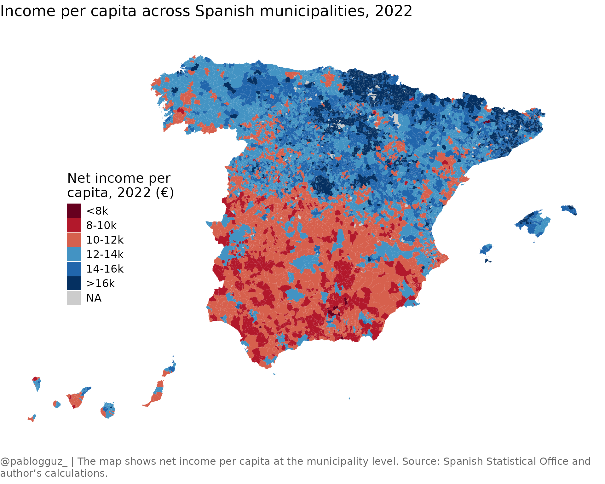

Creating maps with ineAtlas
Pablo Garcia Guzman
2024-11-08
Source:vignettes/mapping-with-ineatlas.Rmd
mapping-with-ineatlas.RmdThis vignette demonstrates how to use ineAtlas to create
choropleth maps of socioeconomic indicators across Spanish
municipalities.
Load required packages
First, let’s load the required packages. We will use the
mapSpain](https://ropenspain.github.io/mapSpain/) package to get
the municipality geometries.
Get municipality data
Let’s fetch income data for all Spanish municipalities for the year 2022:
# Get municipality level income data
mun_data <- get_atlas(
category = "income",
level = "municipality"
) %>%
filter(year == 2022)
# Preview the data
head(mun_data)
#> # A tibble: 6 × 11
#> mun_code mun_name prov_code prov_name year net_income_pc net_income_hh
#> <chr> <chr> <chr> <chr> <dbl> <dbl> <dbl>
#> 1 02001 Abengibre 02 Albacete 2022 13063 32657
#> 2 02002 Alatoz 02 Albacete 2022 11346 24306
#> 3 02003 Albacete 02 Albacete 2022 13836 35722
#> 4 02004 Albatana 02 Albacete 2022 10767 23630
#> 5 02005 Alborea 02 Albacete 2022 10489 22177
#> 6 02006 Alcadozo 02 Albacete 2022 10709 23819
#> # ℹ 4 more variables: net_income_equiv <dbl>, median_income_equiv <dbl>,
#> # gross_income_pc <dbl>, gross_income_hh <dbl>Get municipality geometries
Now we’ll get the municipality geometries from mapSpain:
# Get municipality geometries
mun_map <- esp_get_munic_siane() %>%
# Join with our income data
left_join(
mun_data,
by = c("LAU_CODE" = "mun_code")
)
# Preview the joined data
glimpse(mun_map)
#> Rows: 8,213
#> Columns: 18
#> $ codauto <chr> "01", "01", "01", "01", "01", "01", "01", "01", "0…
#> $ ine.ccaa.name <chr> "Andalucía", "Andalucía", "Andalucía", "Andalucía"…
#> $ cpro <chr> "04", "04", "04", "04", "04", "04", "04", "04", "0…
#> $ ine.prov.name <chr> "Almería", "Almería", "Almería", "Almería", "Almer…
#> $ cmun <chr> "001", "002", "003", "004", "005", "006", "007", "…
#> $ name <chr> "Abla", "Abrucena", "Adra", "Albanchez", "Albolodu…
#> $ LAU_CODE <chr> "04001", "04002", "04003", "04004", "04005", "0400…
#> $ mun_name <chr> "Abla", "Abrucena", "Adra", "Albanchez", "Albolodu…
#> $ prov_code <chr> "04", "04", "04", "04", "04", "04", "04", "04", "0…
#> $ prov_name <chr> "Almería", "Almería", "Almería", "Almería", "Almer…
#> $ year <dbl> 2022, 2022, 2022, 2022, 2022, 2022, 2022, 2022, 20…
#> $ net_income_pc <dbl> 11635, 10927, 9316, 10464, 11054, 9761, 10103, 120…
#> $ net_income_hh <dbl> 25522, 22066, 25639, 21030, 23237, 26991, 19494, 2…
#> $ net_income_equiv <dbl> 16511, 15129, 14206, 14958, 15436, 15267, 13757, 1…
#> $ median_income_equiv <dbl> 15050, 13650, 12950, 13650, 14350, 13650, 12250, 1…
#> $ gross_income_pc <dbl> 13305, 12361, 10650, 11885, 12457, 11545, 11311, 1…
#> $ gross_income_hh <dbl> 29187, 24962, 29311, 23885, 26187, 31924, 21823, 3…
#> $ geom <MULTIPOLYGON [°]> MULTIPOLYGON (((-2.759034 3..., MULTI…Create a choropleth map
Let’s create a map showing net income per capita across Spanish municipalities:
# Create the map
ggplot(mun_map) +
geom_sf(
aes(fill = cut(net_income_pc,
breaks = c(-Inf, 8000, 10000, 12000, 14000, 16000, Inf),
labels = c("<8k", "8-10k", "10-12k", "12-14k", "14-16k", ">16k")
)),
color = NA
) +
labs(
title = "Income per capita across Spanish municipalities, 2022",
caption = "@pablogguz_ | The map shows net income per capita at the municipality level. Source: Spanish Statistical Office and author's calculations."
) +
scale_fill_manual(
name = "Net income per \ncapita, 2022 (€)",
values = c("#67001F", "#B2182B", "#D6604D", "#4393C3", "#2166AC", "#053061"),
na.value = "grey80"
) +
theme_void() +
theme(
text = element_text(family = "Open Sans", size = 16),
plot.title = element_text(size = 18, margin = margin(b = 20)),
legend.position = c(0.2, 0.5),
plot.caption = element_textbox_simple(
size = 12,
color = "grey40",
margin = margin(t = 20),
hjust = 0,
halign = 0,
lineheight = 1.2
)
)
Identifying high and low income areas
Let’s find the top 10 municipalities by net income per capita:
mun_data %>%
arrange(desc(net_income_pc)) %>%
select(mun_name, net_income_pc) %>%
head(10) %>%
mutate(
net_income_pc = round(net_income_pc, 2)
)
#> # A tibble: 10 × 2
#> mun_name net_income_pc
#> <chr> <dbl>
#> 1 Pozuelo de Alarcón 29258
#> 2 Oroz-Betelu/Orotz-Betelu 25780
#> 3 Goñi 25532
#> 4 Matadepera 24814
#> 5 Bolvir 24812
#> 6 Boadilla del Monte 24748
#> 7 Palau de Santa Eulàlia 24437
#> 8 Madremanya 24190
#> 9 Vilamòs 24052
#> 10 Brull, El 23957And the bottom 10:
mun_data %>%
arrange(net_income_pc) %>%
select(mun_name, net_income_pc) %>%
head(10) %>%
mutate(
net_income_pc = round(net_income_pc, 2)
)
#> # A tibble: 10 × 2
#> mun_name net_income_pc
#> <chr> <dbl>
#> 1 Odèn 6274
#> 2 Torre del Burgo 6277
#> 3 Manjarrés 7146
#> 4 Huesa 7603
#> 5 Darro 7712
#> 6 Guadahortuna 7757
#> 7 Iznalloz 7777
#> 8 Palmar de Troya, El 7779
#> 9 Albuñol 7949
#> 10 Palomas 8036